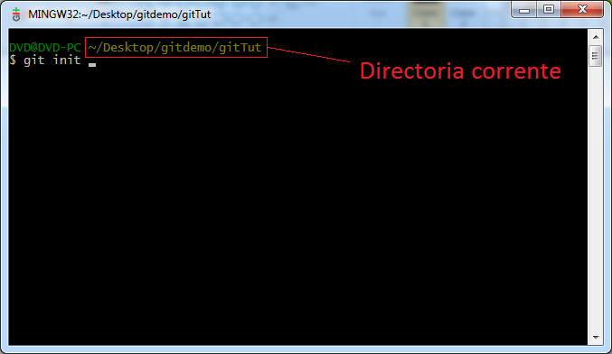

Usando o Git
1º Passo - Conta GitHub
2º Passo - Fazer download e instalar GitBash
Para fazer download de uma aplicação cliente git (consola) pode-se visitar http://git-scm.com/.
3º Passo - Criar repositório local
Criar uma pasta, em qualquer localização do file system, onde se pretende ter o projecto guardado (evitar caminhos com caracteres não US-ASCII e espaços).
Usando o GitBash, instalado no 2º passo, vamos "caminhar" para a directoria do projecto utilizando comandos conhecidos do UNIX (cd) e dentro da directoria do projecto executar o comando git clone https://<url_do_repositorio>, este comando irá criar uma nova pasta com o nome do projecto no GitHub, que servirá de pasta base ao controlo de versões git, e vai ligar essa pasta com o repositório remoto e irá funcionar também como repositório local.
Nota: É possível criar um repositório local sem ligar a nenhum repositório remoto usando o comando git init.
4º Passo - Primeiro Commit
Vamos então fazer o nosso primeiro commit, para tal vamos primeiro configurar o git, informação esta que vai servir como identificação nos logs dos commits.
Teremos então que efectuar dois comandos:
- git config --global user.name "<nome>"
- git config --global user.email <email>
Nota: O email deverá coincidir com o da conta do GitHub para que este mostre na aplicação web o utilizador correcto, que fez o commit.
Antes de se fazer commit é necessário dizer quais os ficheiros que vamos adicionar através do commando git add. A maneira mais rápida para adicionar todos os ficheiros é de fazer na raiz do repositório git add .
Assim que se adicionar todos os ficheiros para o commit podemos então executar o comando git commit -m "<Mensagem>" -a. Neste comando existem dois parâmetros em utilização:
- O parâmetro 'm' que serve para indicar a mensagem associada ao commit, este é obrigatório. Se não for indicado ele irá utilizar um editor de texto para pedir a mensagem.
- O parâmetro 'a' serve para indicar que queremos adicionar todos os ficheiros alterados e os removidos. Atenção, não adiciona novos ficheiros para isso deve-se sempre utilizar o git add.
5º Passo - Primeiro Push
No git um commit não implica uma alteração no repositório remoto, é o comando git push que irá fazer isso.
Caso o repositório local já se encontre ligado a um remoto basta fazer git push, irá ser pedida a password da conta, e se tudo correr bem o push irá ser concluído.
Nota: Se não se encontrar ligado deve-se indicar no comando para que repositório se irá fazer o push, isto também pode ser usado num repositório ligado para fazer o push num outro repositório (git push https://<url_do_repositorio>). Para ligar o repositório local a um remoto, para evitar tar sempre a usar no comando git push, deve-se usar o comando git remote add <nome_do_branch> <url_do_repositorio>, para fazer a ligação.
O push poderá não correr bem se o repositório local não estiver sincronizado com o repositório remoto, para sincronizar é preciso fazer um pull (o qual poderá originar conflitos). Depois de concluído o pull pode-se então fazer novamente o push. Em caso de conflito aconselha-se o uso de ferramentas que facilitam a resolução destes, nomeadamente o TortoiseGit. Para saber como resolver conflictos por linha de comandos clique aqui.
6º Passo - Sincronizar repositório local com o remoto
Para sincronizar o repositório local com o remoto é utilizado o comando git pull que irá buscar a revisão HEAD da branch remota, à qual o repositório local se encontra associado.
Resolvendo conflictos
A quando de um git pull é possível acontecer conflictos, caso duas (ou mais) pessoas tenham alterado o mesmo ficheiro.

Para resolver estes conflictos, a maneira mais simples, é de escolher uma das versões, recorrendo ao comando git checkout --theirs|--ours <nome_ficheiro>
Depois de resolvido o conflito tem que se fazer commit para que o repositório local fique com a versão actualizada, ou seja, a versão que resolveu o conflicto.